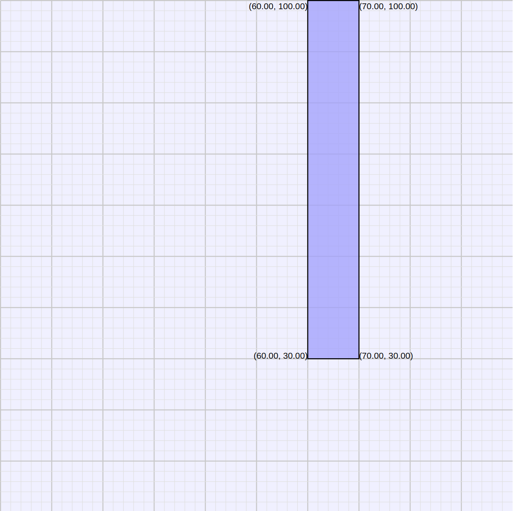

This hint sheet covers a few basics for playing Land Grab, in particular ways of finding the center and radius of circles that fit into a particular area.
We'll use this example layout for Land Grab, with a single obstacle of width 10 and height 70, and we'll place three circles in it.

The simplest math is placing a circle of maximum radius in a rectangular area like the upper left corner of the diagram.
What is the maximum radius circle that can fit into the upper left corner?
You should be able to answer this with a bit of thought. Note that the area's width is less than its height so width is the constraining limit. A radius of 30, half the width, is the biggest feasible circle.
What center coordinates will put the circle as high as possible?
This is left as a simple exercise, with an answer shown below.
A more complex case arises in the lower right corner. Here the largest circle is bracketed by the right and lower sides, and by the barrier corner at (70, 30). Importantly, that barrier, the circle center, and the lower right corner, are in a line. This helps with the computation of max radius r for a circle inscribed in that corner.
As a multiple of r, how far is the circle center from the lower right corner?
It may help to recall that the proportions of a right isocoles triangle
are 1, 1,
As a multiple of r, how far is the (70, 30) point from the lower right corner?
Since that corner, the center, and the lower right corner are aligned, you can just add another r to the value you had for the distance between the center and lower right corner.
Finally, how far is (70,30) from the corner as a direct value?
Since (70,30) is 30 units away from the right and bottom sides, you can compute its distance from the lower right corner directly. This value, combined with the same distance as a multiple of r, should give you an equation to compute r. Do this, and come up with a value between 17 and 18.
Use this radius value to compute the center of a circle that just touches the left and bottom edges, and the barrier corner.
A more complex case is a circle in the lower left corner, which is bounded by the left and bottom edges, and the large circle we created earlier. As the diagram shows, the center of this circle is r units away from the left and bottom. But, the center of the large circle above, the center of our new circle, and the lower left corner are not aligned, so we can't just add up radii like we did for the lower-right circle.
Instead, we consider the black triangle formed by the two circle centers, and apply the Pythagorean theorem to relate its sides, and get an equation involving r.
In terms of the values 30, 70, and r, how long are the horizontal and vertical sides of the triangle?
This is left as an exercise, but the values are very simple expressions of those values.
How long is the hypotenuse?
This is also simple to compute because the distance between the centers of two touching circles is simply the total of their radii
Use these values to arrive at an equation for r
Again, an exercise for the reader, but simplifying the resultant equation should get you:
And solving this with the quadratic formula arrives at r = 20.5.